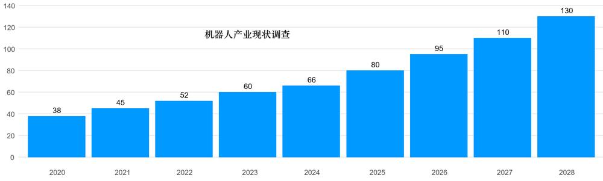
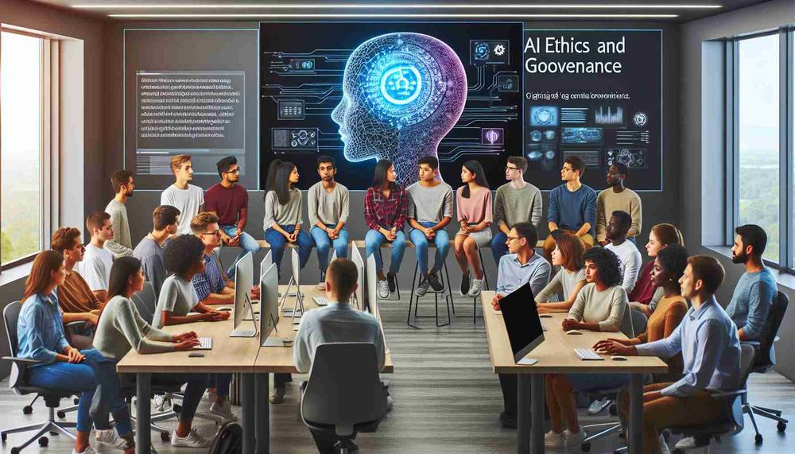
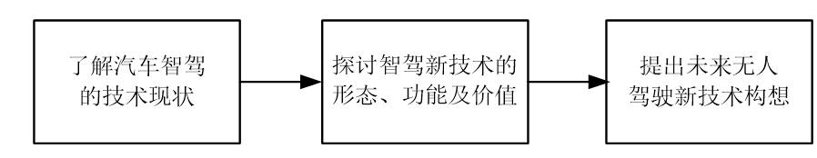
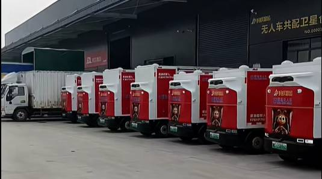
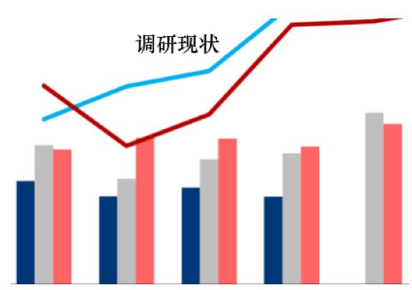
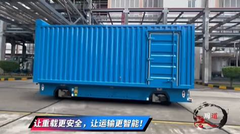
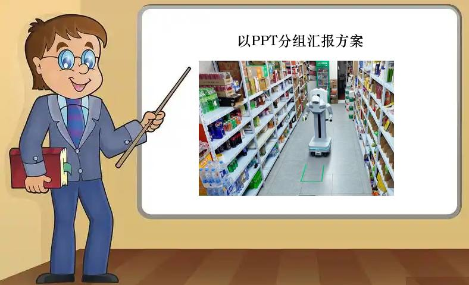

第 1 页 · 4 课堂实践
4 课堂实践

模块8：展望未来人工智能


第 2 页 · 实践项目一：未来家庭机器人应用调研
实践项目一：未来家庭机器人应用调研
背景：2025年中国服务机器人产量达1800多万套，家庭清洁、康养陪护等场景需求旺盛
2026年博览会展出全场景机器人，但仍受限于复杂动作能力、成本及安全隐私。
实践目标
调研现状，分析趋势，提出发展建议
第 3 页 · 实践步骤：
实践步骤：
步骤1
任务1：调研家庭机器人产业现状
搜集主流厂商产品信息，从产业规模、核心技术、竞争格局、用户需求、政策法规等方面了解市场现状
▼

第 4 页 · 实践步骤：
实践步骤：
步骤2
任务2：研讨AI技术及伦理问题
探讨清洁、收纳、陪伴等场景技术创新，讨论从被动呼唤到主动服务的技术路径，分析数据泄露和隐私保护问题

第 5 页 · 实践步骤：
实践步骤：
步骤3
任务3：提出合理化发展策略
形成含市场现状、技术趋势、伦理风险和发展策略的调研报告，以PPT形式分组汇报交流
合理化建议及策略
第 6 页 · 实践项目二：理想无人驾驶新技术探讨
实践项目二：理想无人驾驶新技术探讨
背景：智能汽车已在高速和城区实现自动驾驶，但受限于现有的智能技术条件，智能汽车还不可以在任何道路、天气条件下完全自动运行。
实践目的
结合AI技术知识和对新技术的展望，描述理想的无人驾驶技术形态，探讨新技术的功能、应用场景和价值，以负责任的技术创新理念，提出未来智能汽车无人驾驶新技术构想。

解决方案流程

第 7 页 · 实践步骤：
实践步骤：
步骤1
任务1：调研智驾技术现状
从算法架构、感知技术、系统集成三大维度调研，了解端到端大模型、激光雷达融合方案和软硬协同技术。
▼

第 8 页 · 实践步骤：
实践步骤：
步骤2
任务2：探讨无人驾驶新技术
讨论从场景识别到常识推理的进化路径，云端大模型实现远距认知跃迁，构建人机共存的智驾安全伦理框架。
▼

无驾驶室的重载汽车
第 9 页 · 实践步骤：
实践步骤：
步骤3
任务3：总结新技术应用方案
从新技术功能、应用场景、潜在价值和风险防范等方面形成应用方案，以PPT形式分组汇报。

第 10 页 · 评价标准
评价标准
| 评价要求 | 分值 | 评分标准 |
| 信息搜集与整理 | 20 | 资料全面、来源可靠，分类清晰有条理 |
| 技术分析与论证 | 25 | 理解核心技术原理，分析深入有见地 |
| 创新思维与建议 | 25 | 提出有新意的技术构想和可行建议 |
| 团队协作与表达 | 15 | 分工明确，配合默契，汇报流畅 |
| 伦理与安全意识 | 15 | 充分考虑隐私保护、安全性和社会责任 |
第 11 页 · 子任务3：语音提示处理
子任务3：语音提示处理

善用 AI 新技术
三思利弊有分寸